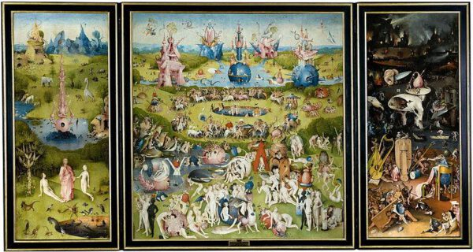
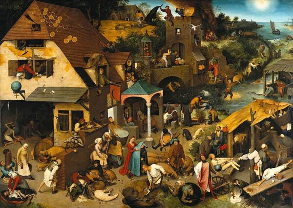
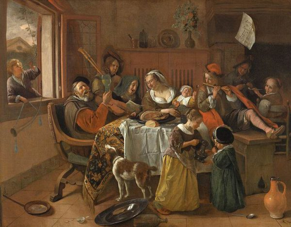
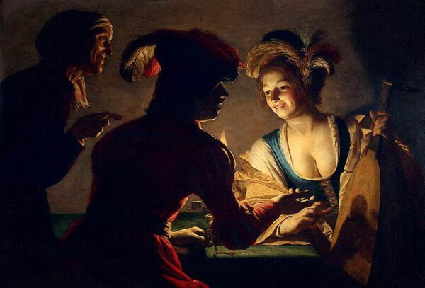
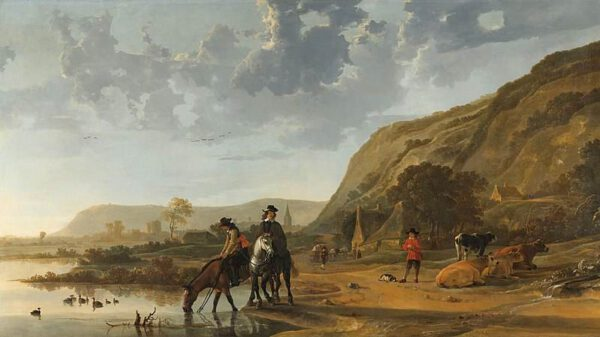
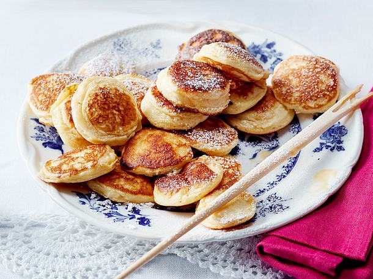
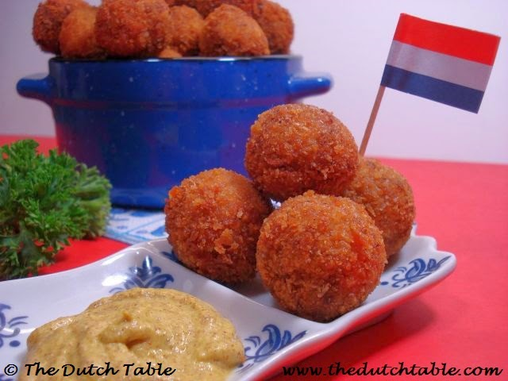

Traditional Dutch music is inspired on the beautiful country of The Netherlands. This music is called Dutch Windmills. We hope you enjoy listening to it!
Jheronimus Bosch — late 15th century

The left panel of the painting depicts paradise or the Garden of Eden (you can tell by Adam and Eve). The middle panel shows the Fall of Man, where people do all kinds of “depraved” things, such as spending time with black people. Finally, on the right panel, you see the Biblical hell.
Pieter “Boer” Brueghel de Oude (the Elder) — early 16th century
One of his paintings called “The Dutch Proverbs” from 1559 remains very famous to this day and contains about 125 Dutch expressions (some of which are no longer in use, nowadays). You can also view the painting can in Berlin’s Gemäldegalerie.

Jan Steen — the 17th century
One of his most famous pieces, “Het Vrolijke Huisgezin” (The happy family), depicts a chaotic family having fun. You can easily marvel at this painting as well as Rembrandt’s “The Night Watch”, as they both can be viewed in the Rijksmuseum in Amsterdam.

Gerard van Honthorst — the 17th century
One of his famous paintings called “De Koppelaarster” (The Matchmaker) was painted in 1625 and can still be admired in the Central Museum in Utrecht.

Albert Cuyp — the 17th century
One of his famous vistas is the Rivierlandschap met Ruiters (River Landscape with Riders). It’s a panorama of a meandering river with two riders resting their horses. This painting is currenlty in the Amsterdam Rijksmuseum.

Dutch Dancing street parade
Traditional, Typical and famous Dutch Food
The Netherlands is not known for its cuisine, but you should try at least some of the traditional Dutch food items in the list below when you are visiting Amsterdam & The Netherlands.
Stroopwafels
A stroopwafel is a unique kind of cookie. It is a waffle made from baked batter and sliced horizontally.
Kroket
The ‘kroket’ is a deep fried roll with meat ragout inside, covered in breadcrumbs. The common English translation of’ kroket’ is croquette.

Poffertjes
A traditional Dutch batter treat is ‘poffertjes’. They look like baby pancakes but much fluffier.

Bitterballen
‘Bitterballen’ are the Dutch favorite snack and can be ordered in almost every café and bar, because of its real tasty combination with beer. These savory meat-based balls are deeply fried and traditionally served with mustard.